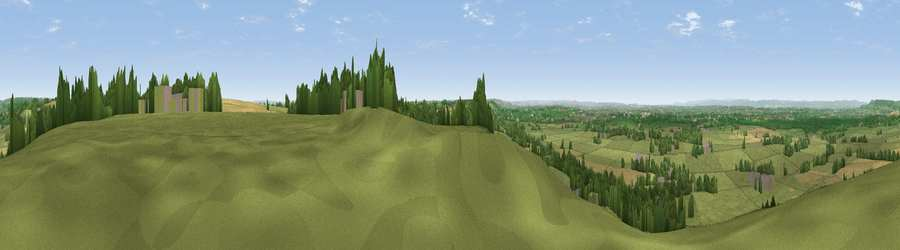

Viewpoint near Horton
#8648 in England · top 10% of its area beats it · near HortonThe view, rendered

A 360° render of this exact spot computed from the terrain model, tree cover and land cover — summer colours, afternoon light, calibrated against photographs of famous viewpoints. Real trees, hedges and buildings will differ in detail.
The panorama
Grey silhouette: terrain skyline in each direction (720 bearings, Earth curvature and refraction included). Dashed green: skyline with trees (+15 m) and buildings (+8 m) as obstacles. Blue strip: how far the ground is visible on each bearing.
Where the view opens
Wedge length = distance to the farthest visible ground on that bearing (vegetation-aware). Rings at 10, 25 and 50 km.
What fills the view
67% grassland · 16% woodland · 14% cropland · 2% built-up
Angular shares of the visible panorama (visual magnitude), not map area. Landscape diversity 0.41 (0–1 Shannon).
Key numbers
More beautiful places nearby
The staircase of upgrades: each row has a higher view potential than everything closer. Driving times are estimates from straight-line distance, calibrated against real road routing — check an actual route before setting out.
| Place | Direction | Drive | Score |
|---|---|---|---|
| Viewpoint near Horton | ENE · 1 km | ~2 min | 65.5 |
| Viewpoint near Horton | NE · 1 km | ~3 min | 66.9 |
| Viewpoint near Wortley | N · 8 km | ~16 min | 67.8 |
| Wotton Hill | N · 9 km | ~18 min | 70.7 |
| Viewpoint near North Nibley | N · 10 km | ~20 min | 76.3 |
| Viewpoint near Stinchcombe | NNW · 14 km | ~25 min | 80.5 |
| Nottingham Hill | NNE · 49 km | ~70 min | 80.9 |
| Chase End Hill | N · 51 km | ~72 min | 81.5 |
51.55900, -2.34146 · source: screening · position refined by local search. Computed location — check access rights before visiting.